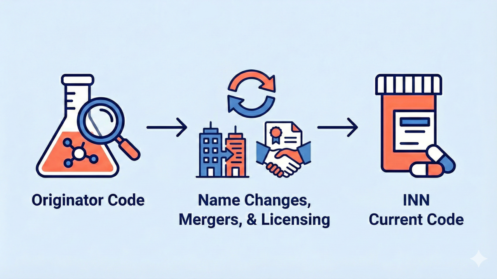

Development code archaeology

Before a drug has an INN, it has a development code: AZD0914, BI 1015550, MK-3475. Many clinical trials are registered under the code, and a search on the INN alone does not find them. This site follows work on harvesting such codes from named sources, reviewing them, counting the trials they recover, and publishing them to Wikidata with references.
The field notes are numbered and keep their figures once written. The reference pages are updated as the work goes on.
Field notes
- Development codes on Wikidata: why, what was done, what I learnedA new Wikidata property for development codes, the first 41 referenced statements, and why most of the hard questions were about identity.
- What the codes find in the trial registryHow many trials of the 2025 FDA novel approvals and of big sellers can only be found by a development code, and where in a drug's history they are.
- Harvesting development codes from named sourcesInstead of asking an AI to remember codes: collect them where they are written down, with an evidence rule I can check and a review where a person decides.
- Where it started: a holiday project and a detour into chemistryDecember 2025: how many trials of last year's new drugs can only be found by their development codes? February 2026: can the codes be found in PubChem? What I learned, and the two questions I took further.
Reference pages
- Method: sources, evidence rule, review classes, matching rule.
- Publication decisions: rules and decisions for publishing codes to Wikidata, and the outcome so far.
- Identity findings: company and level questions met on the way.
- Collections: the drug collections and where each one stands.